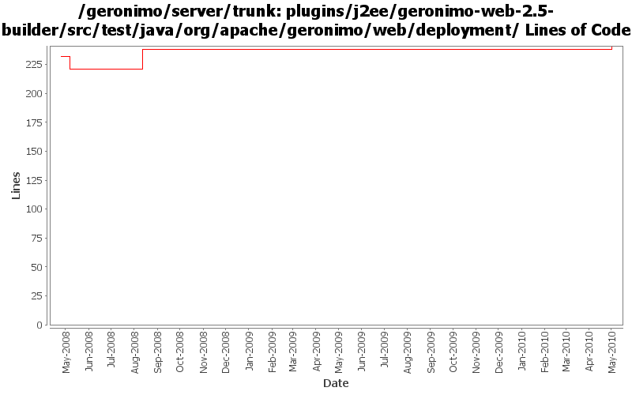

[root]/plugins/j2ee/geronimo-web-2.5-builder/src/test/java/org/apache/geronimo/web/deployment

| Author | Changes | Lines of Code | Lines per Change |
|---|---|---|---|
| Totals | 8 (100.0%) | 24 (100.0%) | 3.0 |
| djencks | 3 (37.5%) | 22 (91.7%) | 7.3 |
| xuhaihong | 2 (25.0%) | 2 (8.3%) | 1.0 |
| jdillon | 3 (37.5%) | 0 (0.0%) | 0.0 |
a. Calculate web permissions while starting the web module to support setServletSecurity feature in Servlet 3.0
b. Initial support ServletContainerInitializer, some improvements might be needed, such as use ASM ?
c. Support ORDERED_LIBS ServletContext attribute
2 lines of code changed in 2 files:
get j2ee module to build
0 lines of code changed in 2 files:
GERONIMO-3149 Some gbeans to support jaspi components and a little bit of reorganization
22 lines of code changed in 1 file:
More loggers back to static
0 lines of code changed in 1 file:
(GERONIMO-3985) Use SLF4J as the primary logging facade for Geronimo
0 lines of code changed in 2 files: